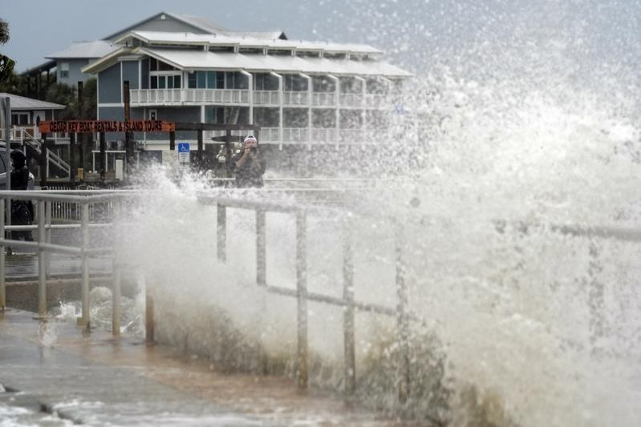
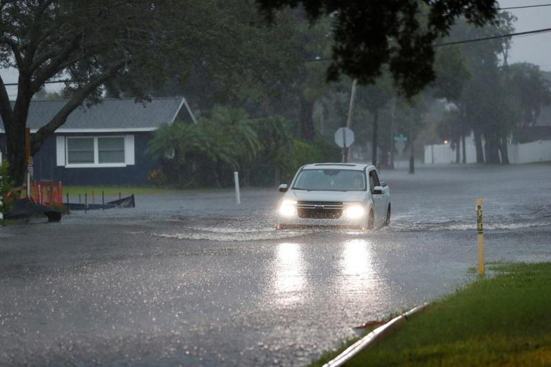

稍后威力已降为热带风暴的一级飓风黛比(Debby)5日清晨挟带豪雨登陆佛州墨西哥湾沿岸地区后，往北移动，风速减缓，降为热带风暴；但气象预报员警告，未来几天风向转东时，乔治亚州沿岸和南卡州可能降下破纪录雨量，各地要慎防洪水暴涨。
戴比早上5时在佛州北部人口不到1000的小镇史坦哈奇(Steinhatchee)附近登陆时，威力是一级飓风，当地人口不多，但预报员说飓风带来特大豪雨可能酿成危险的洪灾。
经营船坞的威廉斯(Chris Williams)从公寓窗口俯瞰史坦哈奇河水上涨的情况，说豪雨未带来更严重的灾情，真是「上天保佑。」他说，早晨5点半左右飓风登陆时就停电，河口一排排的船坞前面，塞满了残枝败叶和木桶、垃圾。这个小镇距离去年伊大利亚飓风(Idalia)登陆处约20哩。
威廉斯说，一年内连遭两次飓风袭击，的确不妙。「我们只能尽力做好防灾准备，天灾降临后，也只能认命清理、复原，继续过日子。」
国家飓风中心专家肯加洛锡(John Cangialosi)说，那一带海岸是「很脆弱的地点」，有些地方已经承受了10-12吋的雨量。
PowerOutage.us网站和乔治亚州电力公司说，到5日中午，佛州和乔治亚州有超过35万户停电。佛州州长德桑提斯说，已出动1万7000名电线维修工人抢修恢复供电。他呼吁灾区居民待在家里，暴风平静下来再出门。
他说，「水位上升，街道可能淹水，情况危险，别勉强开车涉水前行，我们不愿看到交通事故死亡人数往上升。」
一名卡车司机5日早上在坦帕地区湿滑的75号州际道路上，开着装载拖拉机的拖车撞上路旁的水泥墙，不幸身亡。4日深夜，一名38岁妇女开车载着两名男孩，也因为路面湿滑，汽车子撞上路中央分隔岛泥砖翻覆后，冲出道路；驾车女子和一名12岁男童不幸死亡，另一位14岁男孩重伤送医。
勒维郡警局长办公室说，根斯维尔西南一间移动住宅5日早晨被倒下的树木压垮，一名13岁男孩丧命。

一级飓风黛比5日清晨挟带豪雨登陆佛州墨西哥湾沿岸地区，激起巨浪。(美联社)
稍后威力已降为热带风暴的一级飓风黛比(Debby)5日清晨挟带豪雨登陆佛州墨西哥湾沿岸地区后，往北移动，风速减缓，降为热带风暴；但气象预报员警告，未来几天风向转东时，乔治亚州沿岸和南卡州可能降下破纪录雨量，各地要慎防洪水暴涨。
戴比早上5时在佛州北部人口不到1000的小镇史坦哈奇(Steinhatchee)附近登陆时，威力是一级飓风，当地人口不多，但预报员说飓风带来特大豪雨可能酿成危险的洪灾。
经营船坞的威廉斯(Chris Williams)从公寓窗口俯瞰史坦哈奇河水上涨的情况，说豪雨未带来更严重的灾情，真是「上天保佑。」他说，早晨5点半左右飓风登陆时就停电，河口一排排的船坞前面，塞满了残枝败叶和木桶、垃圾。这个小镇距离去年伊大利亚飓风(Idalia)登陆处约20哩。
佛州萨瓦那市的居民5日忙着搬运沙包，准备抵抗可能的豪雨洪水。(美联社)
威廉斯说，一年内连遭两次飓风袭击，的确不妙。「我们只能尽力做好防灾准备，天灾降临后，也只能认命清理、复原，继续过日子。」
国家飓风中心专家肯加洛锡(John Cangialosi)说，那一带海岸是「很脆弱的地点」，有些地方已经承受了10-12吋的雨量。
PowerOutage.us网站和乔治亚州电力公司说，到5日中午，佛州和乔治亚州有超过35万户停电。佛州州长德桑提斯说，已出动1万7000名电线维修工人抢修恢复供电。他呼吁灾区居民待在家里，暴风平静下来再出门。
他说，「水位上升，街道可能淹水，情况危险，别勉强开车涉水前行，我们不愿看到交通事故死亡人数往上升。」

佛州州长德桑提斯呼吁民众：「水位上升，街道可能淹水，情况危险，别勉强开车涉水前进。」(路透)
一名卡车司机5日早上在坦帕地区湿滑的75号州际道路上，开着装载拖拉机的拖车撞上路旁的水泥墙，不幸身亡。4日深夜，一名38岁妇女开车载着两名男孩，也因为路面湿滑，汽车子撞上路中央分隔岛泥砖翻覆后，冲出道路；驾车女子和一名12岁男童不幸死亡，另一位14岁男孩重伤送医。
勒维郡警局长办公室说，根斯维尔西南一间移动住宅5日早晨被倒下的树木压垮，一名13岁男孩丧命。